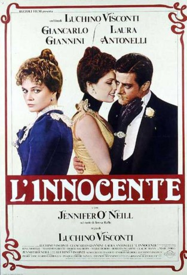

#11278 Die Unschuld
Alternativ: L'Innocente (Englischer Titel)
 
 IMDB-Wertung: 7.5 / 10
IMDB-Wertung: 7.5 / 10  Metascore: 0
Metascore: 0 
Der letzte Film Viscontis vor seinem Tod 1976. Ende des 19. Jahrhunderts: Ein römischer Adliger tötet das uneheliche Kind seiner Frau. Er verliert Frau und Geliebte und begeht schließlich Selbstmord. Visconti beschreibt die Hauptfigur als Vorbote des Faschismus.
Jahr: 1976
Dauer: 129 Minuten
FSK: 16
Land: Italien Studio: Progress Film-VerleihTonspuren:
Untertitel:
Auflösung: 1080p (1920x824) Größe: 10065 MB
Genre: Drama, Liebe
Regisseur: Luchino Visconti
Drehbuch: Gabriele D'Annunzio, Suso Cecchi D'Amico, Enrico Medioli, Luchino Visconti
Soundtrack: Franco Mannino
Darsteller:
 Giancarlo Giannini als Tullio Hermil
Giancarlo Giannini als Tullio Hermil- Laura Antonelli als Giuliana Hermil
 Jennifer O'Neill als Teresa Raffo
Jennifer O'Neill als Teresa Raffo- Rina Morelli als
- Massimo Girotti als
- Marie Dubois als
- Roberta Paladini als
- Claude Mann als
 Marc Porel als
Marc Porel als - Marina Pierro als
- Vittorio Zarfati als
- Didier Haudepin als
- Philippe Hersent als
- Elvira Cortese als
- Siria Betti als
- Enzo Musumeci Greco als
- Alessandra Vazzoler als
- Alessandro Consorti als
- Filippo Perego als
- Margherita Horowitz als
- Riccardo Satta als
Datei: X:\1976\Unschuld, Die (1976, FSK16, 1920x824).mkv seit 10.06.2019
Festplatte: HD 1971-1979
 Es gibt insgesamt 31 Filme in der Gruppe '1976'
Es gibt insgesamt 31 Filme in der Gruppe '1976'